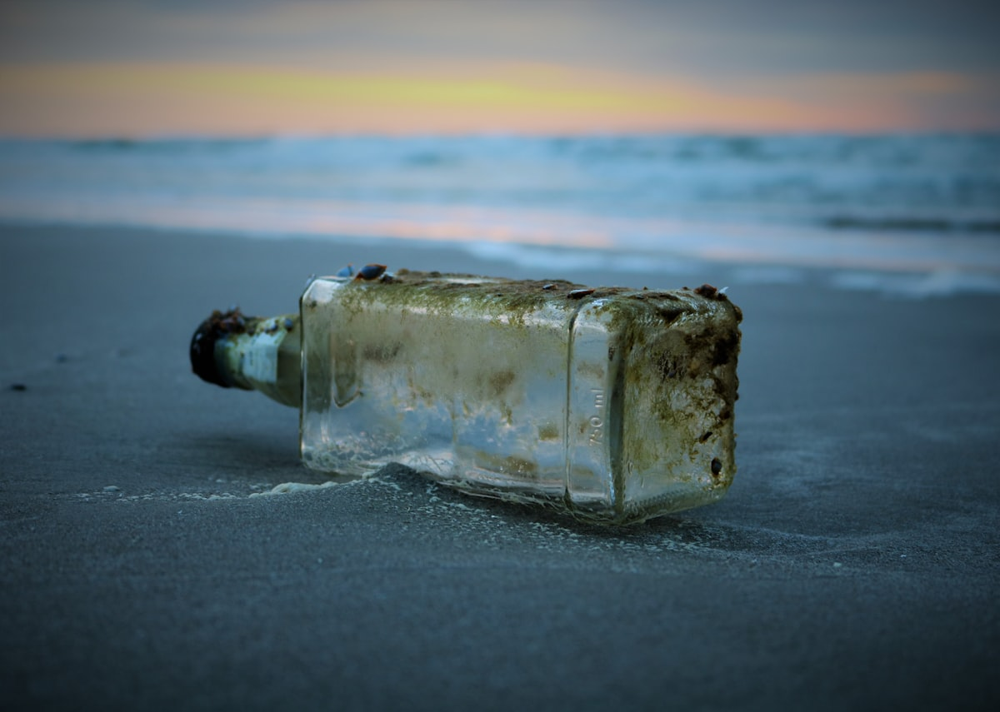

Уральский регион
Этот раздел привязывает проект к практике региона (Оренбургская область и Урал): водные объекты, источники нагрузки и как из наблюдений и мониторинга получать проверяемые выводы. Цифры и примеры здесь демонстрационные — под реальный отдел они подменяются на данные мониторинга.
Сельское хозяйство
Города и стоки
Иллюстрация “до/после”
Перетяни вертикальный ползунок: слева — “повышенная нагрузка” как визуальный образ; справа — “снижение нагрузки” после мер. В реальном проекте вместо иллюстраций подставляются карты/снимки/графики по точкам мониторинга.

